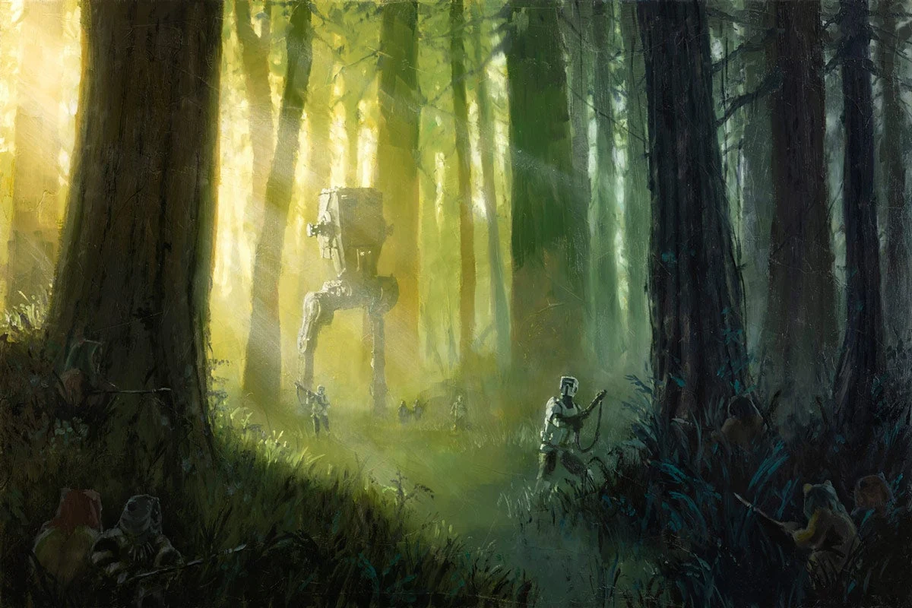

Luke rejoins the Rebel Alliance as they prepare their attack on the Empire's second Death Star.
Luke travels to the forest moon with Han, Leia, and the other Rebels. However, he soon realizes that Darth Vader can sense his presence. Staying with his friends could put the entire mission in danger.
Luke believes there is still good inside his father. Instead of running from Vader again, he decides that it is finally time to confront him.
Luke leaves his friends behind. What is he really doing?
or
